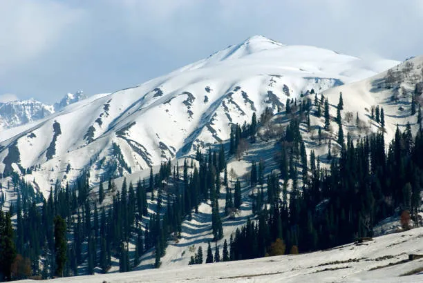
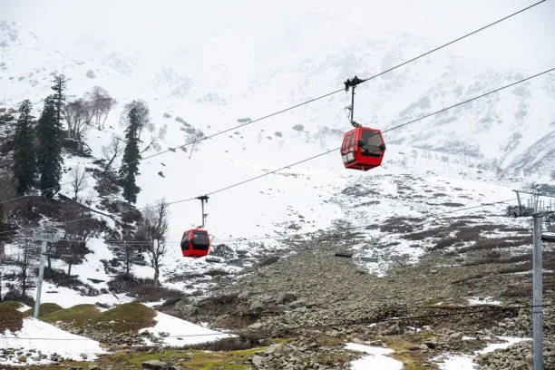

Famously known as the ‘Meadow of Flowers’, Gulmarg is one of the most beautiful places in Kashmir which is a treat to the eyes with its spread of vibrant flowers against snow-capped mountains as backgrounds.
Gulmarg is considered to be one of the best places to visit in Kashmir with family for all right reasons.
This region of Kashmir is also known as the adventurer’s paradise because of its vast options for skiing in the snow while enjoying the views around.
June to October, and for snow December & January would be the best
Mountain Biking, trekking, Skiing if you visit in winter and Gondola rides for a panoramic view of the valley.